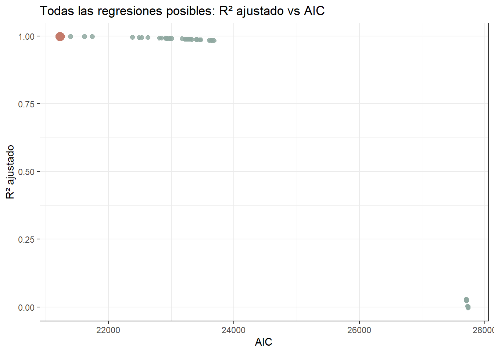
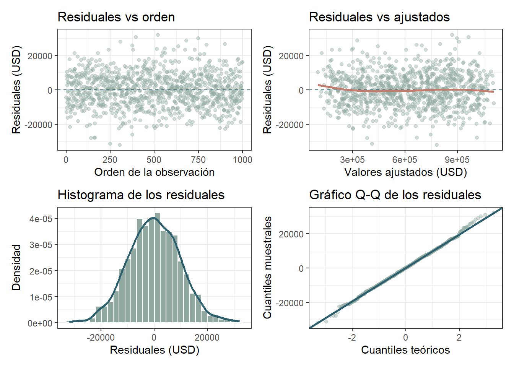
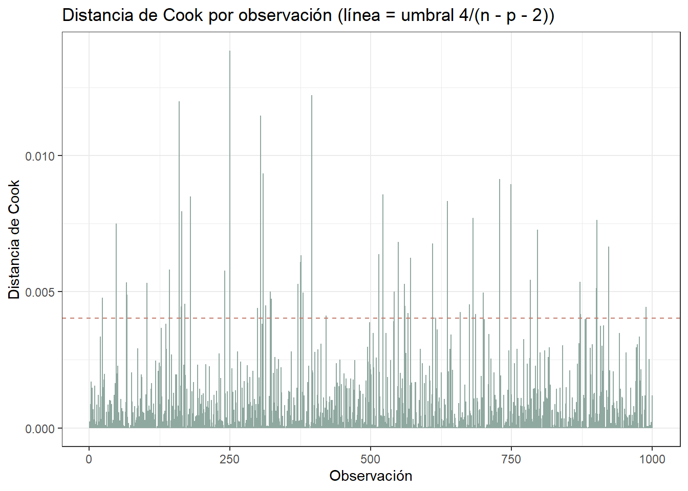

10 Modelo de regresión lineal múltiple
El modelo simple mostró que el tamaño del terreno tiene un efecto real sobre el precio, pero que por sí solo explica apenas el 2.6% de su variabilidad, y que sus residuales no son normales. La conclusión de ese capítulo fue que el resto de la variabilidad depende de otras características de la vivienda. La regresión lineal múltiple (RLM) permite incluirlas todas en un mismo modelo y responder dos preguntas a la vez: cuánto mejora la capacidad explicativa y cuál es el efecto de Lot_Size sobre el precio manteniendo constantes las demás características, que es justamente la idea de precio implícito de la teoría hedónica planteada en el marco teórico.
10.1 Formulación del modelo
Con las 7 variables predictoras del conjunto de datos, el modelo propuesto es el siguiente.
\[\text{House Price} = \beta_0 + \beta_1 \,\text{Square Footage} + \beta_2 \,\text{Num Bedrooms} + \beta_3 \,\text{Num Bathrooms} + \beta_4 \,\text{Year Built} + \beta_5 \,\text{Lot Size} + \beta_6 \,\text{Garage Size} + \beta_7 \,\text{Neighborhood Quality} + \varepsilon\]
En forma matricial se escribe \(\mathbf{y} = \mathbf{X}\boldsymbol\beta + \boldsymbol\varepsilon\), donde \(\mathbf{y}\) es el vector de los 1.000 precios, \(\mathbf{X}\) es la matriz de diseño (una columna de unos para el intercepto y una columna por cada predictora) y \(\boldsymbol\varepsilon \sim N(\mathbf{0}, \sigma^2\mathbf{I})\). Cada coeficiente \(\beta_j\) se interpreta como el cambio esperado en el precio cuando la variable \(x_j\) aumenta en una unidad y todas las demás se mantienen constantes.
Para no arrastrar la variable Calidad_Grupo que se creó en el capítulo anterior, se arma una base solo con las 8 variables originales.
10.2 Estimación de los coeficientes
Por mínimos cuadrados, el vector de coeficientes estimados se obtiene con la siguiente expresión.
\[\hat{\boldsymbol\beta} = (\mathbf{X}'\mathbf{X})^{-1}\mathbf{X}'\mathbf{y}\]
Se calcula primero de forma matricial y luego se compara con lo que entrega lm().
modelo_completo <- lm(House_Price ~ ., data = datos_rlm)
X <- model.matrix(modelo_completo)
y <- datos_rlm$House_Price
XtX_inv <- solve(t(X) %*% X)
beta_hat <- XtX_inv %*% t(X) %*% y
data.frame(
Termino = rownames(beta_hat),
Matricial = round(as.vector(beta_hat), 2),
Lm = round(coef(modelo_completo), 2)
) %>%
kableExtra::kbl(row.names = FALSE,
col.names = c("Término", "Cálculo matricial", "lm()")) %>%
kableExtra::kable_styling(bootstrap_options = c("striped", "hover", "condensed", "bordered"),
full_width = FALSE)| Término | Cálculo matricial | lm() |
|---|---|---|
| (Intercept) | -2006987.65 | -2006987.65 |
| Square_Footage | 199.76 | 199.76 |
| Num_Bedrooms | 10170.95 | 10170.95 |
| Num_Bathrooms | 8244.54 | 8244.54 |
| Year_Built | 991.47 | 991.47 |
| Lot_Size | 14919.32 | 14919.32 |
| Garage_Size | 5158.06 | 5158.06 |
| Neighborhood_Quality | 80.62 | 80.62 |
Los dos cálculos coinciden. El modelo ajustado queda así (coeficientes redondeados).
\[\widehat{\text{House Price}} = -2.007.000 + 199.8\,\text{SqFt} + 10.171\,\text{Bed} + 8.245\,\text{Bath} + 991.5\,\text{Year} + 14.919\,\text{Lot} + 5.158\,\text{Garage} + 80.6\,\text{Quality}\]
Por ejemplo, manteniendo constantes las demás características, cada pie cuadrado adicional de construcción aumenta el precio en USD 199.8, cada habitación adicional en USD 10.171 y cada acre adicional de terreno en USD 14.919. El intercepto negativo no tiene interpretación práctica, porque correspondería a una vivienda construida en el año 0 y sin superficie, algo muy lejos del rango observado.
10.3 Prueba de significancia global y tabla ANOVA
La prueba global contrasta si al menos una de las predictoras aporta a explicar el precio.
\[H_0: \beta_1 = \beta_2 = \cdots = \beta_7 = 0 \qquad \text{vs.} \qquad H_1: \beta_j \neq 0 \text{ para al menos un } j\]
La variabilidad total del precio se descompone en \(SST = SSR + SSE\), y el estadístico de prueba es \(F_0 = \dfrac{SSR / k}{SSE / (n - k - 1)} = \dfrac{MSR}{MSE}\), que bajo \(H_0\) sigue una distribución \(F_{k,\,n-k-1}\), con \(k = 7\) predictoras.
n_rlm <- nrow(X)
p_rlm <- ncol(X)
k_rlm <- p_rlm - 1
SST <- sum((y - mean(y))^2)
SSE <- sum(residuals(modelo_completo)^2)
SSR <- SST - SSE
MSR <- SSR / k_rlm
MSE <- SSE / (n_rlm - k_rlm - 1)
F0 <- MSR / MSE
p_F <- pf(F0, k_rlm, n_rlm - k_rlm - 1, lower.tail = FALSE)
data.frame(
Fuente = c("Regresión", "Residuos", "Total"),
gl = c(k_rlm, n_rlm - k_rlm - 1, n_rlm - 1),
Suma_cuadrados = format(c(SSR, SSE, SST), scientific = TRUE, digits = 4),
Cuadrado_medio = c(format(c(MSR, MSE), scientific = TRUE, digits = 4), ""),
F_valor = c(round(F0, 2), "", ""),
P_valor = c(format(p_F, scientific = TRUE, digits = 3), "", "")
) %>%
kableExtra::kbl(row.names = FALSE,
col.names = c("Fuente de variación", "gl", "Suma de cuadrados", "Cuadrado medio", "F", "P-valor")) %>%
kableExtra::kable_styling(bootstrap_options = c("striped", "hover", "condensed", "bordered"),
full_width = FALSE) %>%
kableExtra::scroll_box(width = "100%")| Fuente de variación | gl | Suma de cuadrados | Cuadrado medio | F | P-valor |
|---|---|---|---|---|---|
| Regresión | 7 | 6.414e+13 | 9.162e+12 | 95425.16 | 0e+00 |
| Residuos | 992 | 9.525e+10 | 9.602e+07 | ||
| Total | 999 | 6.423e+13 |
Con F = 95.425 y un p-valor prácticamente igual a cero, se rechaza \(H_0\): el modelo en su conjunto es altamente significativo. Vale la pena comparar el cuadrado medio de los residuos con el del modelo simple: allí el MSE era del orden de \(6.3 \times 10^{10}\) y aquí baja a \(9.6 \times 10^{7}\), es decir, unas 650 veces menor.
10.4 Pruebas individuales e intervalos de confianza para cada \(\beta_j\)
Que el modelo sea significativo en conjunto no implica que todas las predictoras lo sean. Para cada coeficiente se contrasta \(H_0: \beta_j = 0\) frente a \(H_1: \beta_j \neq 0\) con el estadístico \(t_0 = \hat\beta_j / ee(\hat\beta_j)\), que sigue una distribución \(t_{n-p}\). El error estándar sale de la diagonal de la matriz \(\hat\sigma^2 (\mathbf{X}'\mathbf{X})^{-1}\), y el intervalo de confianza es \(\hat\beta_j \pm t_{1-\alpha/2;\,n-p}\; ee(\hat\beta_j)\).
coef_rlm <- summary(modelo_completo)$coefficients
ic_rlm <- confint(modelo_completo)
data.frame(
Termino = rownames(coef_rlm),
Estimacion = round(coef_rlm[, 1], 2),
Error_estandar = round(coef_rlm[, 2], 2),
Estadistico_t = round(coef_rlm[, 3], 2),
P_valor = format(coef_rlm[, 4], scientific = TRUE, digits = 3),
IC_inf = round(ic_rlm[, 1], 2),
IC_sup = round(ic_rlm[, 2], 2)
) %>%
kableExtra::kbl(row.names = FALSE,
col.names = c("Término", "Estimación", "Error estándar", "Estadístico t", "P-valor", "IC 95% inferior", "IC 95% superior")) %>%
kableExtra::kable_styling(bootstrap_options = c("striped", "hover", "condensed", "bordered"),
full_width = FALSE) %>%
kableExtra::scroll_box(width = "100%")| Término | Estimación | Error estándar | Estadístico t | P-valor | IC 95% inferior | IC 95% superior |
|---|---|---|---|---|---|---|
| (Intercept) | -2006987.65 | 30056.05 | -66.77 | 0.00e+00 | -2065968.38 | -1948006.92 |
| Square_Footage | 199.76 | 0.25 | 803.79 | 0.00e+00 | 199.27 | 200.24 |
| Num_Bedrooms | 10170.95 | 219.16 | 46.41 | 7.57e-251 | 9740.89 | 10601.02 |
| Num_Bathrooms | 8244.54 | 378.70 | 21.77 | 3.31e-86 | 7501.39 | 8987.68 |
| Year_Built | 991.47 | 15.07 | 65.81 | 0.00e+00 | 961.90 | 1021.03 |
| Lot_Size | 14919.32 | 240.58 | 62.01 | 0.00e+00 | 14447.21 | 15391.43 |
| Garage_Size | 5158.06 | 383.35 | 13.46 | 4.98e-38 | 4405.79 | 5910.33 |
| Neighborhood_Quality | 80.62 | 107.62 | 0.75 | 4.54e-01 | -130.57 | 291.80 |
Seis de las siete predictoras son significativas con p-valores prácticamente iguales a cero, y sus intervalos de confianza quedan lejos del cero. La excepción es Neighborhood_Quality (t = 0.75; p = 0.454), cuyo intervalo de confianza (−130.6 a 291.8) contiene el cero: una vez se conocen la superficie, las habitaciones, los baños, el año, el terreno y el garaje, la calidad del vecindario no aporta información adicional sobre el precio.
Un resultado clave para la pregunta central de este trabajo es el cambio en el coeficiente de Lot_Size. En el modelo simple, cada acre adicional se asociaba con USD 31.339 más en el precio; en el modelo múltiple, ese efecto baja a USD 14.919 (IC 95%: 14.447 a 15.391). La diferencia se debe a que en el modelo simple el terreno se “llevaba” parte del efecto de otras características con las que comparte una leve asociación (en el capítulo de correlación, Lot_Size y Square_Footage resultaron correlacionadas, aunque débilmente). El segundo valor es el efecto propio del terreno, ya separado del resto, y además se estima con mucha más precisión: su error estándar pasa de USD 6.104 a USD 241.
10.5 Coeficiente de determinación \(R^2\) y \(R^2\) ajustado
En la RLM el \(R^2\) siempre aumenta al agregar variables, aunque estas no aporten nada. Por eso se usa también el \(R^2\) ajustado, que penaliza por el número de parámetros.
\[R^2 = \frac{SSR}{SST} = 1 - \frac{SSE}{SST} \qquad\qquad R^2_{adj} = 1 - \frac{SSE / (n - p)}{SST / (n - 1)}\]
R2_rlm <- SSR / SST
R2_adj_rlm <- 1 - (SSE / (n_rlm - p_rlm)) / (SST / (n_rlm - 1))
data.frame(
Modelo = c("Simple: House_Price ~ Lot_Size", "Múltiple: 7 predictoras"),
R2 = round(c(summary(modelo_lineal)$r.squared, R2_rlm), 4),
R2_adj = round(c(summary(modelo_lineal)$adj.r.squared, R2_adj_rlm), 4),
Sigma = format(round(c(summary(modelo_lineal)$sigma, summary(modelo_completo)$sigma)), big.mark = ",")
) %>%
kableExtra::kbl(row.names = FALSE,
col.names = c("Modelo", "R²", "R² ajustado", "Error estándar residual (USD)")) %>%
kableExtra::kable_styling(bootstrap_options = c("striped", "hover", "condensed", "bordered"),
full_width = FALSE)| Modelo | R² | R² ajustado | Error estándar residual (USD) |
|---|---|---|---|
| Simple: House_Price ~ Lot_Size | 0.0257 | 0.0248 | 250,410 |
| Múltiple: 7 predictoras | 0.9985 | 0.9985 | 9,799 |
El salto es enorme: el modelo múltiple explica el 99.85% de la variabilidad del precio, frente al 2.57% del modelo simple, y el error típico de predicción baja de unos USD 250.000 a menos de USD 10.000. El \(R^2\) ajustado es prácticamente igual al \(R^2\), señal de que la ganancia no se debe a haber metido muchas variables. Un ajuste tan alto es poco común con datos reales del mercado inmobiliario y sugiere que el conjunto de datos fue generado de forma sintética a partir de una fórmula casi lineal, algo que conviene tener presente al generalizar estos resultados.
10.6 Análisis de multicolinealidad
Antes de seleccionar variables conviene revisar si hay multicolinealidad, es decir, si alguna predictora contiene casi la misma información que las demás. Si la hubiera, la matriz \(\mathbf{X}'\mathbf{X}\) estaría cerca de ser singular y los \(\hat\beta_j\) serían inestables.
Una primera señal ya se tiene: en el capítulo de correlación entre variables independientes, ninguna pareja de predictoras superó un \(|r_s|\) de 0.12. Para confirmarlo se usan dos indicadores. El número de condición (ICN), calculado con kappa(), sugiere multicolinealidad cuando es mayor que 30. El factor de inflación de varianza, \(VIF_j = 1 / (1 - R_j^2)\), donde \(R_j^2\) es el \(R^2\) de la regresión de \(x_j\) contra las demás predictoras, señala a la variable \(x_j\) como problemática cuando \(VIF_j > 5\).
datos_estandarizados <- datos_rlm %>%
mutate(across(-House_Price, ~ as.numeric(scale(.x))))
modelo_estandarizado <- lm(House_Price ~ ., data = datos_estandarizados)
data.frame(
Calculo = c("ICN con las variables en sus unidades originales",
"ICN con las variables estandarizadas"),
ICN = round(c(kappa(modelo_completo), kappa(modelo_estandarizado)), 2)
) %>%
kableExtra::kbl(row.names = FALSE,
col.names = c("Cálculo", "Número de condición (ICN)")) %>%
kableExtra::kable_styling(bootstrap_options = c("striped", "hover", "condensed", "bordered"),
full_width = FALSE)| Cálculo | Número de condición (ICN) |
|---|---|
| ICN con las variables en sus unidades originales | 315607.85 |
| ICN con las variables estandarizadas | 1.26 |
Con las variables en sus unidades originales el ICN da un valor enorme (más de 300.000), pero esto no se debe a multicolinealidad sino a las escalas: Year_Built toma valores cercanos a 2.000 mientras la columna del intercepto vale 1, y Square_Footage llega a miles mientras Num_Bathrooms solo va de 1 a 3. Cuando se estandarizan las predictoras (todas con media 0 y desviación 1), el ICN baja a 1.26, muy por debajo de 30. El VIF, que no depende de las escalas, permite ver variable por variable.
vif_rlm <- car::vif(modelo_completo)
data.frame(
Variable = names(vif_rlm),
VIF = round(vif_rlm, 3),
TOL = round(1 / vif_rlm, 3)
) %>%
kableExtra::kbl(row.names = FALSE,
col.names = c("Variable", "VIF", "Tolerancia (1/VIF)")) %>%
kableExtra::kable_styling(bootstrap_options = c("striped", "hover", "condensed", "bordered"),
full_width = FALSE)| Variable | VIF | Tolerancia (1/VIF) |
|---|---|---|
| Square_Footage | 1.013 | 0.987 |
| Num_Bedrooms | 1.018 | 0.982 |
| Num_Bathrooms | 1.004 | 0.996 |
| Year_Built | 1.005 | 0.995 |
| Lot_Size | 1.014 | 0.986 |
| Garage_Size | 1.016 | 0.985 |
| Neighborhood_Quality | 1.004 | 0.996 |
Todos los VIF están entre 1.00 y 1.02, prácticamente en el mínimo posible (VIF = 1 indica que la variable no está correlacionada en absoluto con las demás). No hay multicolinealidad: cada predictora aporta información propia, y por eso los coeficientes se pueden interpretar uno por uno.
10.7 Selección de variables
El modelo completo tiene una variable no significativa (Neighborhood_Quality), así que vale la pena buscar un modelo más sencillo que explique el precio igual de bien. Se usan los dos enfoques vistos en clase.
10.7.1 Método de todas las regresiones posibles
Con 7 predictoras hay \(2^7 - 1 = 127\) modelos posibles. La función ols_step_all_possible() del paquete olsrr los ajusta todos y calcula para cada uno varios criterios. Se busca el modelo con mayor \(R^2_{adj}\), el de menor AIC y el que tenga un \(C_p\) de Mallows más cercano al número de predictoras.
todas_posibles <- olsrr::ols_step_all_possible(modelo_completo)
resultados <- todas_posibles$result
mejor_adjr <- resultados[which.max(resultados$adjr), ]
mejor_cp <- resultados[which.min((resultados$cp - resultados$n)^2), ]
mejor_aic <- resultados[which.min(resultados$aic), ]
data.frame(
Criterio = c("Mayor R² ajustado", "Cp más cercano a p", "Menor AIC"),
n = c(mejor_adjr$n, mejor_cp$n, mejor_aic$n),
Predictoras = c(mejor_adjr$predictors, mejor_cp$predictors, mejor_aic$predictors),
R2_adj = round(c(mejor_adjr$adjr, mejor_cp$adjr, mejor_aic$adjr), 6),
Cp = round(c(mejor_adjr$cp, mejor_cp$cp, mejor_aic$cp), 2),
AIC = round(c(mejor_adjr$aic, mejor_cp$aic, mejor_aic$aic), 2)
) %>%
kableExtra::kbl(row.names = FALSE,
col.names = c("Criterio", "N.º de predictoras", "Predictoras", "R² ajustado", "Cp", "AIC")) %>%
kableExtra::kable_styling(bootstrap_options = c("striped", "hover", "condensed", "bordered"),
full_width = FALSE) %>%
kableExtra::scroll_box(width = "100%")| Criterio | N.º de predictoras | Predictoras | R² ajustado | Cp | AIC |
|---|---|---|---|---|---|
| Mayor R² ajustado | 6 | Square_Footage Num_Bedrooms Num_Bathrooms Year_Built Lot_Size Garage_Size | 0.998507 | 6.56 | 21226.45 |
| Cp más cercano a p | 6 | Square_Footage Num_Bedrooms Num_Bathrooms Year_Built Lot_Size Garage_Size | 0.998507 | 6.56 | 21226.45 |
| Menor AIC | 6 | Square_Footage Num_Bedrooms Num_Bathrooms Year_Built Lot_Size Garage_Size | 0.998507 | 6.56 | 21226.45 |
Los tres criterios coinciden en el mismo modelo: el de 6 predictoras, que deja por fuera a Neighborhood_Quality. Para verlo de forma gráfica se cruzan dos criterios a la vez, el \(R^2_{adj}\) y el AIC; el mejor modelo debe estar arriba a la izquierda (mayor \(R^2_{adj}\) y menor AIC).
resultados %>%
ggplot(aes(x = aic, y = adjr)) +
geom_point(alpha = 0.6, color = "#8fa8a0", size = 2) +
geom_point(data = mejor_aic, color = "#c47b6b", size = 4) +
labs(title = "Todas las regresiones posibles: R² ajustado vs AIC",
x = "AIC", y = "R² ajustado") +
theme_bw()
El punto resaltado es el modelo de 6 predictoras. Los modelos se agrupan en bloques según incluyan o no a Square_Footage: los que no la incluyen tienen un \(R^2_{adj}\) muy bajo y un AIC mucho mayor, lo que confirma que la superficie construida es, por mucho, la variable que más explica el precio.
10.7.2 Selección secuencial con stepAIC()
Como complemento se aplican los tres métodos secuenciales con stepAIC() del paquete MASS: hacia adelante (forward, que parte del modelo solo con intercepto y va agregando variables), hacia atrás (backward, que parte del modelo completo y va quitando) y en ambas direcciones (stepwise). Se usa MASS::stepAIC() en lugar de cargar el paquete con library(MASS), porque MASS tiene su propia función select() que reemplazaría a la de dplyr y dañaría el código de los demás capítulos.
modelo_nulo <- lm(House_Price ~ 1, data = datos_rlm)
sel_forward <- MASS::stepAIC(modelo_nulo,
scope = list(lower = modelo_nulo, upper = modelo_completo),
direction = "forward", trace = FALSE)
sel_backward <- MASS::stepAIC(modelo_completo, direction = "backward", trace = FALSE)
sel_both <- MASS::stepAIC(modelo_nulo,
scope = list(lower = modelo_nulo, upper = modelo_completo),
direction = "both", trace = FALSE)
data.frame(
Metodo = c("Forward", "Backward", "Stepwise (ambas direcciones)"),
Predictoras = c(paste(attr(terms(sel_forward), "term.labels"), collapse = ", "),
paste(attr(terms(sel_backward), "term.labels"), collapse = ", "),
paste(attr(terms(sel_both), "term.labels"), collapse = ", ")),
AIC = round(c(AIC(sel_forward), AIC(sel_backward), AIC(sel_both)), 2)
) %>%
kableExtra::kbl(row.names = FALSE,
col.names = c("Método", "Variables seleccionadas (en orden de entrada)", "AIC")) %>%
kableExtra::kable_styling(bootstrap_options = c("striped", "hover", "condensed", "bordered"),
full_width = FALSE) %>%
kableExtra::scroll_box(width = "100%")| Método | Variables seleccionadas (en orden de entrada) | AIC |
|---|---|---|
| Forward | Square_Footage, Year_Built, Lot_Size, Num_Bedrooms, Num_Bathrooms, Garage_Size | 21226.45 |
| Backward | Square_Footage, Num_Bedrooms, Num_Bathrooms, Year_Built, Lot_Size, Garage_Size | 21226.45 |
| Stepwise (ambas direcciones) | Square_Footage, Year_Built, Lot_Size, Num_Bedrooms, Num_Bathrooms, Garage_Size | 21226.45 |
Los tres métodos llegan al mismo resultado que el de todas las regresiones posibles: las 6 predictoras, sin Neighborhood_Quality. El orden de entrada del método forward también es informativo: primero entra Square_Footage, después Year_Built y Lot_Size, y al final las habitaciones, los baños y el garaje. Es decir, el tamaño del terreno es la tercera variable más importante para explicar el precio.
10.7.3 Modelo final
modelo_final <- lm(House_Price ~ Square_Footage + Num_Bedrooms + Num_Bathrooms +
Year_Built + Lot_Size + Garage_Size, data = datos_rlm)
coef_final <- summary(modelo_final)$coefficients
ic_final <- confint(modelo_final)
data.frame(
Termino = rownames(coef_final),
Estimacion = round(coef_final[, 1], 2),
Error_estandar = round(coef_final[, 2], 2),
Estadistico_t = round(coef_final[, 3], 2),
P_valor = format(coef_final[, 4], scientific = TRUE, digits = 3),
IC_inf = round(ic_final[, 1], 2),
IC_sup = round(ic_final[, 2], 2)
) %>%
kableExtra::kbl(row.names = FALSE,
col.names = c("Término", "Estimación", "Error estándar", "Estadístico t", "P-valor", "IC 95% inferior", "IC 95% superior")) %>%
kableExtra::kable_styling(bootstrap_options = c("striped", "hover", "condensed", "bordered"),
full_width = FALSE) %>%
kableExtra::scroll_box(width = "100%")| Término | Estimación | Error estándar | Estadístico t | P-valor | IC 95% inferior | IC 95% superior |
|---|---|---|---|---|---|---|
| (Intercept) | -2006347.95 | 30037.27 | -66.80 | 0.00e+00 | -2065291.77 | -1947404.14 |
| Square_Footage | 199.75 | 0.25 | 804.03 | 0.00e+00 | 199.27 | 200.24 |
| Num_Bedrooms | 10162.95 | 218.85 | 46.44 | 3.92e-251 | 9733.49 | 10592.41 |
| Num_Bathrooms | 8249.35 | 378.56 | 21.79 | 2.36e-86 | 7506.48 | 8992.22 |
| Year_Built | 991.38 | 15.06 | 65.82 | 0.00e+00 | 961.82 | 1020.93 |
| Lot_Size | 14926.01 | 240.36 | 62.10 | 0.00e+00 | 14454.33 | 15397.69 |
| Garage_Size | 5156.35 | 383.26 | 13.45 | 5.02e-38 | 4404.26 | 5908.43 |
data.frame(
Modelo = c("Completo (7 predictoras)", "Final (6 predictoras)"),
R2 = round(c(summary(modelo_completo)$r.squared, summary(modelo_final)$r.squared), 6),
R2_adj = round(c(summary(modelo_completo)$adj.r.squared, summary(modelo_final)$adj.r.squared), 6),
AIC = round(c(AIC(modelo_completo), AIC(modelo_final)), 2)
) %>%
kableExtra::kbl(row.names = FALSE,
col.names = c("Modelo", "R²", "R² ajustado", "AIC")) %>%
kableExtra::kable_styling(bootstrap_options = c("striped", "hover", "condensed", "bordered"),
full_width = FALSE)| Modelo | R² | R² ajustado | AIC |
|---|---|---|---|
| Completo (7 predictoras) | 0.998517 | 0.998507 | 21227.88 |
| Final (6 predictoras) | 0.998516 | 0.998507 | 21226.45 |
El modelo final tiene todas sus variables significativas, el mismo \(R^2_{adj}\) y un AIC un poco menor que el modelo completo, con una variable menos. Sus coeficientes prácticamente no cambian respecto al modelo completo, lo cual es esperable porque no hay multicolinealidad. El efecto de Lot_Size queda en USD 14.926 por acre (IC 95%: 14.454 a 15.398). Este es el modelo que se valida y se usa para predecir en lo que sigue.
10.8 Análisis de residuales del modelo final
Igual que en el modelo simple, antes de predecir hay que validar los cuatro supuestos sobre los errores.
residuos_rlm <- residuals(modelo_final)
diag_rlm <- data.frame(
Orden = 1:length(residuos_rlm),
Ajustados = fitted(modelo_final),
Residuales = residuos_rlm
)
g_orden_rlm <- diag_rlm %>%
ggplot(aes(x = Orden, y = Residuales)) +
geom_point(alpha = 0.4, color = "#8fa8a0") +
geom_hline(yintercept = 0, linetype = "dashed", color = "#2c5f6e") +
labs(title = "Residuales vs orden", x = "Orden de la observación", y = "Residuales (USD)") +
theme_bw()
g_ajust_rlm <- diag_rlm %>%
ggplot(aes(x = Ajustados, y = Residuales)) +
geom_point(alpha = 0.4, color = "#8fa8a0") +
geom_hline(yintercept = 0, linetype = "dashed", color = "#2c5f6e") +
geom_smooth(method = "loess", formula = y ~ x, se = FALSE, color = "#c47b6b") +
labs(title = "Residuales vs ajustados", x = "Valores ajustados (USD)", y = "Residuales (USD)") +
theme_bw()
g_hist_rlm <- diag_rlm %>%
ggplot(aes(x = Residuales)) +
geom_histogram(aes(y = after_stat(density)), bins = 30, fill = "#8fa8a0", color = "white") +
geom_density(color = "#2c5f6e", linewidth = 1) +
labs(title = "Histograma de los residuales", x = "Residuales (USD)", y = "Densidad") +
theme_bw()
g_qq_rlm <- diag_rlm %>%
ggplot(aes(sample = Residuales)) +
stat_qq(alpha = 0.4, color = "#8fa8a0") +
stat_qq_line(color = "#2c5f6e", linewidth = 1) +
labs(title = "Gráfico Q-Q de los residuales", x = "Cuantiles teóricos", y = "Cuantiles muestrales") +
theme_bw()
(g_orden_rlm + g_ajust_rlm) / (g_hist_rlm + g_qq_rlm)
Los cuatro gráficos se ven como se esperaría si se cumplen los supuestos. En el orden de las observaciones y frente a los valores ajustados, los residuales forman una nube aleatoria de ancho constante alrededor de cero. El histograma ahora sí tiene forma de campana, y en el gráfico Q-Q los puntos siguen la diagonal casi por completo, a diferencia de la “S” del modelo simple. Se confirma con las pruebas formales.
set.seed(123)
dw_rlm <- car::durbinWatsonTest(modelo_final)
sw_rlm <- shapiro.test(residuos_rlm)
t_media_rlm <- t.test(residuos_rlm, mu = 0)
bp_rlm <- lmtest::bptest(modelo_final)
data.frame(
Supuesto = c("Independencia", "Normalidad", "Media cero", "Varianza constante"),
Prueba = c("Durbin-Watson", "Shapiro-Wilk", "t de una muestra", "Breusch-Pagan"),
Estadistico = round(c(dw_rlm$dw, sw_rlm$statistic, t_media_rlm$statistic, bp_rlm$statistic), 4),
P_valor = round(c(dw_rlm$p, sw_rlm$p.value, t_media_rlm$p.value, bp_rlm$p.value), 3),
Cumple = ifelse(c(dw_rlm$p, sw_rlm$p.value, t_media_rlm$p.value, bp_rlm$p.value) > 0.05, "Sí", "No")
) %>%
kableExtra::kbl(row.names = FALSE,
col.names = c("Supuesto", "Prueba", "Estadístico", "P-valor", "¿Se cumple?")) %>%
kableExtra::kable_styling(bootstrap_options = c("striped", "hover", "condensed", "bordered"),
full_width = FALSE)| Supuesto | Prueba | Estadístico | P-valor | ¿Se cumple? |
|---|---|---|---|---|
| Independencia | Durbin-Watson | 2.0673 | 0.292 | Sí |
| Normalidad | Shapiro-Wilk | 0.9986 | 0.626 | Sí |
| Media cero | t de una muestra | 0.0000 | 1.000 | Sí |
| Varianza constante | Breusch-Pagan | 5.6971 | 0.458 | Sí |
En las cuatro pruebas el p-valor es mayor que 0.05, por lo que no se rechaza ninguna hipótesis nula: el modelo final cumple todos los supuestos. Lo más llamativo es la normalidad, que pasa de rechazarse con claridad en el modelo simple (W = 0.967) a cumplirse aquí (W cercano a 0.999). Esto muestra que la falta de normalidad del modelo simple no era un problema de los datos en sí, sino una consecuencia de haber dejado por fuera variables importantes: cuando el modelo las incluye, lo que queda en los residuales es solo ruido aleatorio.
10.8.1 Identificación de outliers
Un outlier es una observación cuyo precio real se aleja mucho de lo que predice el modelo. Para detectarlos se usan los residuales estudentizados \(r_i\) (rstudent()), que se distribuyen aproximadamente como una normal estándar. Por la regla de las 3 sigmas, una observación es sospechosa si \(|r_i| > 3\).
r_estudentizados <- rstudent(modelo_final)
sospechosos <- which(abs(r_estudentizados) > 3)
data.frame(
Observacion = sospechosos,
Precio = datos_rlm$House_Price[sospechosos],
Ajustado = round(fitted(modelo_final)[sospechosos], 2),
rstudent = round(r_estudentizados[sospechosos], 3)
) %>%
kableExtra::kbl(row.names = FALSE,
col.names = c("Observación", "Precio real (USD)", "Precio ajustado (USD)", "Residual estudentizado")) %>%
kableExtra::kable_styling(bootstrap_options = c("striped", "hover", "condensed", "bordered"),
full_width = FALSE)| Observación | Precio real (USD) | Precio ajustado (USD) | Residual estudentizado |
|---|---|---|---|
| 250 | 381738.0 | 412985.9 | -3.220 |
| 304 | 748220.5 | 780130.7 | -3.286 |
| 395 | 992213.5 | 961469.9 | 3.166 |
| 522 | 901000.5 | 868890.2 | 3.303 |
| 749 | 926488.5 | 896531.1 | 3.081 |
Hay 5 observaciones con \(|r_i| > 3\). Sin embargo, con 1.000 datos es normal encontrar algunas: si los errores son normales, se espera que alrededor del 0.3% (unas 3 observaciones) superen ese umbral solo por azar. Para decidir formalmente se usa la prueba de Bonferroni, que ajusta el p-valor por el número de observaciones y contrasta \(H_0\): la observación \(i\) no es un outlier.
bonferroni <- car::outlierTest(modelo_final, n.max = 5)
data.frame(
Observacion = names(bonferroni$rstudent),
rstudent = round(bonferroni$rstudent, 3),
P_sin_ajuste = format(bonferroni$p, scientific = TRUE, digits = 3),
P_Bonferroni = round(bonferroni$bonf.p, 3)
) %>%
kableExtra::kbl(row.names = FALSE,
col.names = c("Observación", "Residual estudentizado", "P-valor sin ajustar", "P-valor de Bonferroni")) %>%
kableExtra::kable_styling(bootstrap_options = c("striped", "hover", "condensed", "bordered"),
full_width = FALSE)| Observación | Residual estudentizado | P-valor sin ajustar | P-valor de Bonferroni |
|---|---|---|---|
| 522 | 3.303 | 9.9e-04 | 0.99 |
El p-valor de Bonferroni de la observación más extrema es muy superior a 0.05, así que no se rechaza \(H_0\): ninguna observación puede considerarse un outlier. Los casos con \(|r_i|\) algo mayor que 3 son los esperables por azar en una muestra de este tamaño.
10.8.2 Identificación de observaciones influenciales
Una observación influencial es aquella que, si se quitara, cambiaría de forma notable los coeficientes estimados. Se detectan con la distancia de Cook \(D_i\), usando el umbral \(4 / (n - p - 2)\) que se trabajó en clase.
cook <- cooks.distance(modelo_final)
p_final <- length(coef(modelo_final))
umbral_cook <- 4 / (n_rlm - p_final - 2)
data.frame(Observacion = 1:length(cook), Cook = cook) %>%
ggplot(aes(x = Observacion, y = Cook)) +
geom_segment(aes(xend = Observacion, yend = 0), color = "#8fa8a0") +
geom_hline(yintercept = umbral_cook, linetype = "dashed", color = "#c47b6b") +
labs(title = "Distancia de Cook por observación (línea = umbral 4/(n - p - 2))",
x = "Observación", y = "Distancia de Cook") +
theme_bw()
data.frame(
Umbral = round(umbral_cook, 5),
Superan = sum(cook > umbral_cook),
Porcentaje = paste0(round(100 * mean(cook > umbral_cook), 1), "%"),
Cook_maximo = round(max(cook), 5),
Obs_maxima = which.max(cook)
) %>%
kableExtra::kbl(row.names = FALSE,
col.names = c("Umbral 4/(n - p - 2)", "Observaciones que lo superan", "Porcentaje", "Distancia de Cook máxima", "Observación con la máxima")) %>%
kableExtra::kable_styling(bootstrap_options = c("striped", "hover", "condensed", "bordered"),
full_width = FALSE)| Umbral 4/(n - p - 2) | Observaciones que lo superan | Porcentaje | Distancia de Cook máxima | Observación con la máxima |
|---|---|---|---|---|
| 0.00404 | 51 | 5.1% | 0.01385 | 250 |
Alrededor del 5% de las observaciones supera el umbral, pero la distancia de Cook máxima apenas llega a 0.014. Un criterio más exigente, también usado en la literatura (Cook, 1977), considera influencial una observación cuando \(D_i > 1\), y aquí ningún valor se acerca siquiera. Además, el gráfico no muestra ninguna barra que sobresalga del resto. Con 1.000 observaciones, ninguna vivienda por sí sola tiene peso suficiente para mover los coeficientes, así que no hay razón para eliminar datos.
10.9 Modelos con variables cualitativas (variables dummy)
En el capítulo anterior se dividieron las viviendas en tres grupos según la calidad del vecindario (Baja, Media y Alta). Para usar una variable cualitativa como esta dentro de una regresión, hay que convertirla en variables indicadoras (dummy). Con 3 categorías se necesitan 2 dummies, y la categoría restante queda como referencia. Tomando Baja como referencia:
- Media = 1 si la vivienda está en un vecindario de calidad media, 0 en otro caso.
- Alta = 1 si la vivienda está en un vecindario de calidad alta, 0 en otro caso.
- Si ambas valen 0, la vivienda está en un vecindario de calidad baja.
R crea estas variables de forma automática cuando la variable es un factor, como se ve en la matriz de diseño.
data %>%
select(Neighborhood_Quality, Calidad_Grupo) %>%
cbind(model.matrix(~ Calidad_Grupo, data = data)) %>%
distinct(Calidad_Grupo, .keep_all = TRUE) %>%
kableExtra::kbl(row.names = FALSE,
col.names = c("Neighborhood_Quality", "Calidad_Grupo", "Intercepto", "Dummy Media", "Dummy Alta")) %>%
kableExtra::kable_styling(bootstrap_options = c("striped", "hover", "condensed", "bordered"),
full_width = FALSE)| Neighborhood_Quality | Calidad_Grupo | Intercepto | Dummy Media | Dummy Alta |
|---|---|---|---|---|
| 5 | Media | 1 | 1 | 0 |
| 9 | Alta | 1 | 0 | 1 |
| 1 | Baja | 1 | 0 | 0 |
10.9.1 Modelo del precio solo con la calidad del vecindario
modelo_dummy <- lm(House_Price ~ Calidad_Grupo, data = data)
coef_dummy <- summary(modelo_dummy)$coefficients
data.frame(
Termino = c("Intercepto (Baja)", "Media vs Baja", "Alta vs Baja"),
Estimacion = round(coef_dummy[, 1], 2),
Error_estandar = round(coef_dummy[, 2], 2),
Estadistico_t = round(coef_dummy[, 3], 2),
P_valor = round(coef_dummy[, 4], 3)
) %>%
kableExtra::kbl(row.names = FALSE,
col.names = c("Término", "Estimación", "Error estándar", "Estadístico t", "P-valor")) %>%
kableExtra::kable_styling(bootstrap_options = c("striped", "hover", "condensed", "bordered"),
full_width = FALSE)| Término | Estimación | Error estándar | Estadístico t | P-valor |
|---|---|---|---|---|
| Intercepto (Baja) | 623327.27 | 15140.81 | 41.17 | 0.000 |
| Media vs Baja | -6793.20 | 19646.32 | -0.35 | 0.730 |
| Alta vs Baja | -5435.88 | 20937.82 | -0.26 | 0.795 |
El intercepto (USD 623.327) es el precio medio de las viviendas en vecindarios de baja calidad. Los coeficientes de las dummies indican que las de calidad media cuestan en promedio USD 6.793 menos y las de alta USD 5.436 menos que las de baja, pero ninguna de las dos diferencias es significativa (p = 0.730 y p = 0.795), y el modelo explica prácticamente el 0% del precio. Es decir, los tres grupos tienen el mismo precio promedio, lo cual contradice la expectativa del marco teórico de que los mejores vecindarios concentran precios más altos.
10.9.2 Dummies dentro del modelo múltiple
Se reemplaza Neighborhood_Quality por las dummies de grupo dentro del modelo final, y se compara con el modelo final sin ellas mediante una prueba F parcial, que contrasta \(H_0\): los coeficientes de las dos dummies son cero.
modelo_final_grupo <- lm(House_Price ~ Square_Footage + Num_Bedrooms + Num_Bathrooms +
Year_Built + Lot_Size + Garage_Size + Calidad_Grupo, data = data)
coef_grupo <- summary(modelo_final_grupo)$coefficients
data.frame(
Termino = rownames(coef_grupo),
Estimacion = round(coef_grupo[, 1], 2),
Error_estandar = round(coef_grupo[, 2], 2),
Estadistico_t = round(coef_grupo[, 3], 2),
P_valor = format(coef_grupo[, 4], scientific = TRUE, digits = 3)
) %>%
kableExtra::kbl(row.names = FALSE,
col.names = c("Término", "Estimación", "Error estándar", "Estadístico t", "P-valor")) %>%
kableExtra::kable_styling(bootstrap_options = c("striped", "hover", "condensed", "bordered"),
full_width = FALSE) %>%
kableExtra::scroll_box(width = "100%")| Término | Estimación | Error estándar | Estadístico t | P-valor |
|---|---|---|---|---|
| (Intercept) | -2010736.81 | 30034.66 | -66.95 | 0.00e+00 |
| Square_Footage | 199.77 | 0.25 | 805.44 | 0.00e+00 |
| Num_Bedrooms | 10175.90 | 218.67 | 46.54 | 1.51e-251 |
| Num_Bathrooms | 8275.14 | 378.21 | 21.88 | 6.88e-87 |
| Year_Built | 993.07 | 15.05 | 65.99 | 0.00e+00 |
| Lot_Size | 14891.22 | 240.36 | 61.95 | 0.00e+00 |
| Garage_Size | 5142.97 | 382.62 | 13.44 | 5.87e-38 |
| Calidad_GrupoMedia | 1814.27 | 759.81 | 2.39 | 1.71e-02 |
| Calidad_GrupoAlta | 830.02 | 808.59 | 1.03 | 3.05e-01 |
f_parcial_grupo <- anova(modelo_final, modelo_final_grupo)
data.frame(
Modelo = c("Final (sin dummies)", "Final + dummies de calidad"),
gl_res = f_parcial_grupo$Res.Df,
SSE = format(f_parcial_grupo$RSS, scientific = TRUE, digits = 4),
F_valor = c("", round(f_parcial_grupo$F[2], 3)),
P_valor = c("", round(f_parcial_grupo$`Pr(>F)`[2], 4))
) %>%
kableExtra::kbl(row.names = FALSE,
col.names = c("Modelo", "gl residuales", "SSE", "F parcial", "P-valor")) %>%
kableExtra::kable_styling(bootstrap_options = c("striped", "hover", "condensed", "bordered"),
full_width = FALSE)| Modelo | gl residuales | SSE | F parcial | P-valor |
|---|---|---|---|---|
| Final (sin dummies) | 993 | 9.530e+10 | ||
| Final + dummies de calidad | 991 | 9.474e+10 | 2.919 | 0.0545 |
Controlando por las demás características, la dummy de calidad media sale marginalmente significativa (unos USD 1.800 más que en vecindarios de baja calidad), pero la de alta no lo es. Al evaluar las dos dummies juntas con la prueba F parcial (F = 2.92; p = 0.054), no se rechaza \(H_0\) al 5%. Una diferencia de USD 1.800 en viviendas que cuestan en promedio más de USD 600.000 es, además, irrelevante en la práctica. La calidad del vecindario, se mida en escala de 1 a 10 o en tres grupos, no aporta de forma importante a explicar el precio.
10.9.3 ¿Cambia el efecto del terreno según la calidad del vecindario?
El capítulo anterior encontró que, en regresiones simples separadas, la pendiente de Lot_Size era nula en vecindarios de baja calidad y significativa en los de media y alta. Las dummies permiten probar esto formalmente en un solo modelo, agregando la interacción Lot_Size × Calidad_Grupo: si la interacción es significativa, la pendiente del terreno es distinta según el grupo. Se compara, con una prueba F parcial, el modelo con interacción frente al modelo sin ella, primero con Lot_Size como única variable numérica (como en el capítulo anterior) y después dentro del modelo múltiple.
sin_inter_simple <- lm(House_Price ~ Lot_Size + Calidad_Grupo, data = data)
con_inter_simple <- lm(House_Price ~ Lot_Size * Calidad_Grupo, data = data)
con_inter_multiple <- lm(House_Price ~ Square_Footage + Num_Bedrooms + Num_Bathrooms +
Year_Built + Garage_Size + Lot_Size * Calidad_Grupo, data = data)
f_inter_simple <- anova(sin_inter_simple, con_inter_simple)
f_inter_multiple <- anova(modelo_final_grupo, con_inter_multiple)
data.frame(
Comparacion = c("Solo Lot_Size y grupo (como en el capítulo anterior)",
"Modelo múltiple completo"),
F_valor = round(c(f_inter_simple$F[2], f_inter_multiple$F[2]), 3),
P_valor = round(c(f_inter_simple$`Pr(>F)`[2], f_inter_multiple$`Pr(>F)`[2]), 4),
Significativa = ifelse(c(f_inter_simple$`Pr(>F)`[2], f_inter_multiple$`Pr(>F)`[2]) < 0.05, "Sí", "No")
) %>%
kableExtra::kbl(row.names = FALSE,
col.names = c("Prueba de la interacción Lot_Size × Calidad_Grupo", "F parcial", "P-valor", "¿Significativa?")) %>%
kableExtra::kable_styling(bootstrap_options = c("striped", "hover", "condensed", "bordered"),
full_width = FALSE)| Prueba de la interacción Lot_Size × Calidad_Grupo | F parcial | P-valor | ¿Significativa? |
|---|---|---|---|
| Solo Lot_Size y grupo (como en el capítulo anterior) | 3.632 | 0.0268 | Sí |
| Modelo múltiple completo | 0.561 | 0.5708 | No |
El resultado es muy revelador. Cuando solo se tiene en cuenta el terreno, la interacción sí es significativa (F = 3.63; p = 0.027), lo que confirma formalmente lo que se vio en el capítulo anterior: las pendientes de los tres grupos son distintas. Pero cuando se controla por la superficie, las habitaciones, los baños, el año y el garaje, la interacción deja de ser significativa (F = 0.56; p = 0.571). Es decir, una vez se comparan viviendas con las mismas demás características, cada acre adicional de terreno vale lo mismo (unos USD 14.900) en vecindarios de baja, media o alta calidad. Las diferencias del capítulo anterior se debían a que, en cada grupo, el terreno estaba recogiendo de forma distinta el efecto de otras variables que no estaban en el modelo.
10.10 Predicción con el modelo final
Validados los supuestos, el modelo final puede usarse para predecir. Se toma como ejemplo una vivienda “típica” del conjunto de datos: la mediana de superficie (2.862,5 pies²), 3 habitaciones, 2 baños, construida en 1986, con 3 acres de terreno y garaje para 1 vehículo. Igual que en el modelo simple, se calcula el intervalo de confianza para el precio medio de todas las viviendas con esas características y el intervalo de predicción para una vivienda nueva. En forma matricial, con \(\mathbf{x}_0\) el vector de características (con un 1 al inicio para el intercepto), los intervalos son los siguientes.
\[\text{IC: } \hat y_0 \pm t_{1-\alpha/2;\,n-p}\sqrt{\hat\sigma^2\,\mathbf{x}_0'(\mathbf{X}'\mathbf{X})^{-1}\mathbf{x}_0} \qquad \text{IP: } \hat y_0 \pm t_{1-\alpha/2;\,n-p}\sqrt{\hat\sigma^2\left(1 + \mathbf{x}_0'(\mathbf{X}'\mathbf{X})^{-1}\mathbf{x}_0\right)}\]
vivienda_nueva <- data.frame(
Square_Footage = median(datos_rlm$Square_Footage),
Num_Bedrooms = 3,
Num_Bathrooms = 2,
Year_Built = median(datos_rlm$Year_Built),
Lot_Size = 3,
Garage_Size = 1
)
X_final <- model.matrix(modelo_final)
x0_vec <- c(1, as.numeric(vivienda_nueva[1, ]))
b_final <- coef(modelo_final)
gl_final <- nrow(X_final) - length(b_final)
s2_final <- summary(modelo_final)$sigma^2
t_final <- qt(0.975, gl_final)
y0_final <- sum(x0_vec * b_final)
h0 <- as.numeric(t(x0_vec) %*% solve(t(X_final) %*% X_final) %*% x0_vec)
ee_media <- sqrt(s2_final * h0)
ee_pred <- sqrt(s2_final * (1 + h0))
ic_final_media <- predict(modelo_final, newdata = vivienda_nueva, interval = "confidence")
ip_final_viv <- predict(modelo_final, newdata = vivienda_nueva, interval = "prediction")
data.frame(
Intervalo = c("Confianza (manual)", "Confianza (predict)", "Predicción (manual)", "Predicción (predict)"),
Ajuste = round(c(y0_final, ic_final_media[, "fit"], y0_final, ip_final_viv[, "fit"]), 2),
LI = round(c(y0_final - t_final * ee_media, ic_final_media[, "lwr"],
y0_final - t_final * ee_pred, ip_final_viv[, "lwr"]), 2),
LS = round(c(y0_final + t_final * ee_media, ic_final_media[, "upr"],
y0_final + t_final * ee_pred, ip_final_viv[, "upr"]), 2)
) %>%
mutate(Ancho = round(LS - LI, 2)) %>%
kableExtra::kbl(row.names = FALSE,
col.names = c("Intervalo al 95%", "Precio estimado", "Límite inferior", "Límite superior", "Ancho")) %>%
kableExtra::kable_styling(bootstrap_options = c("striped", "hover", "condensed", "bordered"),
full_width = FALSE)| Intervalo al 95% | Precio estimado | Límite inferior | Límite superior | Ancho |
|---|---|---|---|---|
| Confianza (manual) | 631243 | 630625.4 | 631860.5 | 1235.03 |
| Confianza (predict) | 631243 | 630625.4 | 631860.5 | 1235.03 |
| Predicción (manual) | 631243 | 612008.5 | 650477.4 | 38468.94 |
| Predicción (predict) | 631243 | 612008.5 | 650477.4 | 38468.94 |
Los cálculos manuales coinciden con predict(). Para la vivienda típica, el precio estimado es de unos USD 631.243. Con una confianza del 95%, el precio medio de todas las viviendas con esas características está entre USD 630.626 y USD 631.861, y el precio de una vivienda nueva concreta estará entre USD 612.009 y USD 650.477.
ip_simple_3 <- predict(modelo_lineal, newdata = data.frame(Lot_Size = 3), interval = "prediction")
data.frame(
Modelo = c("Simple (solo Lot_Size = 3)", "Múltiple final (vivienda típica con Lot_Size = 3)"),
LI = round(c(ip_simple_3[, "lwr"], ip_final_viv[, "lwr"]), 2),
LS = round(c(ip_simple_3[, "upr"], ip_final_viv[, "upr"]), 2),
Ancho = round(c(ip_simple_3[, "upr"] - ip_simple_3[, "lwr"], ip_final_viv[, "upr"] - ip_final_viv[, "lwr"]), 2)
) %>%
kableExtra::kbl(row.names = FALSE,
col.names = c("Intervalo de predicción al 95%", "Límite inferior", "Límite superior", "Ancho")) %>%
kableExtra::kable_styling(bootstrap_options = c("striped", "hover", "condensed", "bordered"),
full_width = FALSE)| Intervalo de predicción al 95% | Límite inferior | Límite superior | Ancho |
|---|---|---|---|
| Simple (solo Lot_Size = 3) | 134172.7 | 1117458.5 | 983285.76 |
| Múltiple final (vivienda típica con Lot_Size = 3) | 612008.5 | 650477.4 | 38468.95 |
Esta comparación resume el aporte de la regresión múltiple. Con el modelo simple, el intervalo de predicción para una vivienda de 3 acres tenía un ancho de casi USD 1 millón y era inútil en la práctica. Con el modelo múltiple, el ancho baja a unos USD 38.500, es decir, unas 25 veces más angosto, y además ahora se apoya en supuestos que sí se cumplen.